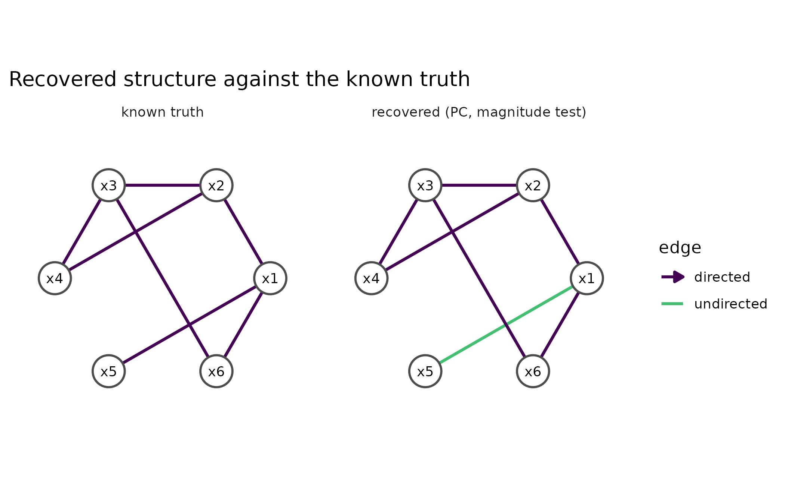

library(cdzoo)
has_pcalg <- requireNamespace("pcalg", quietly = TRUE)
has_ggplot2 <- requireNamespace("ggplot2", quietly = TRUE)
set.seed(20260902)Why
An analyst holding a published correlation matrix, or a table of
pairwise co-occurrence counts, but none of the original rows, asks a
narrower version of the same trust question: I never had a data
matrix to begin with – can I still get a structure, and can the
recommender still tell me how much to trust its routing when it never
saw a single observation? cdzoo treats a sufficient
statistic as a first-class input rather than a special case: it can be
discovered from directly, or handed to the recommender, which routes it
on the one characteristic a correlation matrix actually carries and says
plainly which of its usual diagnostics it could not run.
What
cd_correlation_from_counts() assembles a correlation
matrix from pairwise two-by-two count tables, repairing it to the
nearest valid correlation matrix when the pairwise assembly is not
itself positive-definite. cd_suffstat() wraps a correlation
matrix and its sample size as the aggregated input
cd_auto() recognises. cd_discover_suffstat()
runs constraint-based discovery directly on (C, n):
method = "ggm" needs no back-end and returns the
partial-correlation skeleton, "pc" and "fci"
add orientation through pcalg, and a test of
"gauss" (significance) or "magnitude" (effect
size) decides how an edge is pruned. cd_auto() on a
cd_suffstat routes among the sufficient-statistic methods
on the one signature a correlation matrix carries – a hint of latent
structure – and cd_explain() states plainly which of the
usual diagnostics an aggregated input cannot support.
Do
From counts to a correlation matrix
Co-occurrence data is often published as pairwise two-by-two tables: for each pair of binary variables, the counts of both present, one present, or neither.
pairs <- data.frame(
var_i = c("a", "a", "b"),
var_j = c("b", "c", "c"),
n11 = c(900, 110, 105),
n10 = c(100, 890, 895),
n01 = c(100, 90, 95),
n00 = c(8900, 8910, 8905)
)
mat_c <- cd_correlation_from_counts(pairs, type = "phi")
repair <- attr(mat_c, "repair")| a | b | c | |
|---|---|---|---|
| a | 1.000 | 0.889 | 0.214 |
| b | 0.889 | 1.000 | 0.202 |
| c | 0.214 | 0.202 | 1.000 |
| diagnostic | value |
|---|---|
| smallest eigenvalue, before repair | 0.111 |
| smallest eigenvalue, after | 0.111 |
| distortion (Frobenius norm of the change) | 0.000 |
The distortion is 0: the pairwise assembly above was already a valid correlation matrix, so the repair step changed nothing. A less internally consistent set of pairwise counts – three two-by-two tables whose implied correlations cannot all hold between three variables at once – would need a real repair, and the distortion would say how much the reported matrix had to move to become one.
Discovery directly from the statistic
res_ggm <- cd_discover_suffstat(mat_c, n = 10000, method = "ggm")
edges_ggm <- cd_edges(res_ggm)
edges_ggm
#> from to type
#> 1 a b ---
#> 2 a c ---| from | to | type |
|---|---|---|
| a | b | undirected |
| a | c | undirected |
method = "ggm" needs nothing beyond base R: it
thresholds partial correlations directly, which is why this call runs
regardless of what is installed on the machine.
Two ways to prune, at a sample size large enough to matter
At population-scale sample sizes, a significance-based test rejects
independence for almost every pair, so the graph saturates; the
magnitude test prunes by effect size instead, which is the behaviour a
very large n calls for.
sim <- cd_scenario("linear_gaussian", seed = 1L)
mat_big <- stats::cor(sim$data)
gauss <- cd_discover_suffstat(mat_big, n = 5e6, method = "pc", test = "gauss")
magnitude <- cd_discover_suffstat(
mat_big, n = 5e6, method = "pc", test = "magnitude"
)
edges_gauss <- cd_edges(gauss)
edges_magnitude <- cd_edges(magnitude)
score_magnitude <- cd_score(magnitude, sim$truth)| test | edges |
|---|---|
| gauss (significance) | 14 |
| magnitude (effect size) | 7 |
The magnitude test’s graph is worth seeing beside the truth it is scored against, which the edge table above cannot show on its own – it lists edges, not which ones point the way the truth does:
edges_fig <- rbind(
.edge_segments(magnitude@graph, "recovered (PC, magnitude test)"),
.edge_segments(sim$truth, "known truth")
)
edges_fig$kind <- factor(
ifelse(edges_fig$type == "-->", "directed", "undirected"),
levels = c("directed", "undirected")
)
nodes_fig <- rbind(
data.frame(
.node_xy(colnames(sim$truth)), panel = "recovered (PC, magnitude test)"
),
data.frame(.node_xy(colnames(sim$truth)), panel = "known truth")
)
ggplot2::ggplot() +
ggplot2::geom_segment(
data = edges_fig[edges_fig$kind == "undirected", ],
ggplot2::aes(x = x0, y = y0, xend = x1, yend = y1, colour = kind),
linewidth = 0.9
) +
ggplot2::geom_segment(
data = edges_fig[edges_fig$kind == "directed", ],
ggplot2::aes(x = x0, y = y0, xend = x1, yend = y1, colour = kind),
linewidth = 0.9,
arrow = grid::arrow(length = grid::unit(2.2, "mm"), type = "closed")
) +
ggplot2::geom_point(
data = nodes_fig, ggplot2::aes(x = x, y = y), size = 9, shape = 21,
fill = "white", colour = "grey30", stroke = 1
) +
ggplot2::geom_text(
data = nodes_fig, ggplot2::aes(x = x, y = y, label = node), size = 3.2
) +
ggplot2::scale_colour_viridis_d(
name = "edge", option = "D", end = 0.7, drop = FALSE
) +
ggplot2::facet_wrap(~panel) +
ggplot2::coord_fixed(xlim = c(-1.3, 1.3), ylim = c(-1.3, 1.3)) +
ggplot2::theme_minimal(base_size = 11) +
ggplot2::theme(
axis.text = ggplot2::element_blank(),
axis.title = ggplot2::element_blank(),
panel.grid = ggplot2::element_blank()
) +
ggplot2::labs(title = "Recovered structure against the known truth")
The graph recovered from the correlation matrix alone (PC, magnitude-pruned, n = 5,000,000) beside the scenario’s known truth. Both panels share the same variable layout; an arrow marks a directed edge, a plain line an edge whose direction was not resolved.
| skeleton_f1 | skeleton_precision | skeleton_recall | shd | orient_recall |
|---|---|---|---|---|
| 1 | 1 | 1 | 3 | 0.571 |
Letting the recommender route it
Wrapping the statistic as cd_suffstat() lets
cd_auto() recommend a method over it:
ss <- cd_suffstat(mat_big, n = nrow(sim$data))
rec_ss <- cd_auto(ss)
cd_explain(rec_ss)
#> Recommendation: PC from sufficient statistic (gauss)
#> family : constraint (R)
#> status : ok
#> graph : 6 variables, 7 directed and 0 undirected edges
#>
#> Why this method:
#> no latent-structure hint in the correlation; a constraint-based method
#> (PC) recovers the structure the statistic supports (from a sufficient
#> statistic only the latent-structure hint is available; the
#> non-Gaussianity, nonlinearity, and equal-variance tests need row-level
#> data)
#>
#> Confidence: moderate
#>
#> Alternatives considered (preference order):
#> PC from sufficient statistic, Gaussian graphical model (partial correlation), FCI from sufficient statisticPassing the result on
A recovered graph carries its provenance into the canonical
orchestra_manifest exactly as a data-driven result does
(inferential_target = "structure", the token this package’s
enrolment added to the contract), so an aggregated-input discovery is
verifiable downstream just like any other member’s:
manifest_ss <- as_orchestra_manifest(rec_ss, seed = 1L)
manifest_ss@inferential_target
#> [1] "structure"
verify_manifest(manifest_ss)$ok
#> [1] TRUEThe whole path – counts to a correlation matrix, discovery from the statistic, a routed recommendation, and a verifiable manifest – runs without ever holding a row-level data set.
Read
Yes: a correlation matrix is enough to get a structure, and the recommender states plainly what it could not check to get there. The magnitude-pruned graph recovers the true skeleton exactly (skeleton F1 = 1) but its structural Hamming distance is 3, not zero, because 3 of its seven edges point the wrong way or were left unresolved; a correlation matrix alone under-determines orientation the way a full data matrix would not, and the figure shows exactly which edges that cost fell on. The recommender’s own rationale above states the same limit in words before any graph is drawn: it names the one signature a correlation matrix carries – a hint of latent structure from the matrix’s condition number – and says outright that the non-Gaussianity, nonlinearity, and equal-variance tests the data-driven route leans on need row-level data it does not have.
Limits
The recommender’s route over a sufficient statistic is coarser than
its route over row-level data by construction, not by an oversight this
vignette works around: a correlation matrix carries no information about
non-Gaussianity, nonlinear mechanisms, or unequal residual variances, so
none of those signatures can fire, and every sufficient-statistic
recommendation reports lower confidence for exactly that reason. The
repair step in cd_correlation_from_counts() finds the
nearest valid correlation matrix to an internally inconsistent set of
pairwise counts; it does not, and cannot, recover which of the original
counts was wrong, only how far the assembled matrix had to move to
become coherent. The significance-versus-magnitude contrast above is a
property of the test, not of the sample size on its own: a smaller
n would not saturate the significance test the way
n = 5,000,000 does here, and a data set whose true effect
sizes are themselves small would still saturate a magnitude-pruned graph
toward the empty one. None of this vignette’s examples carries an
unmeasured confounder deliberately; a latent-structure hint from a
near-singular correlation routes to a confounder-robust method, but this
vignette does not construct a case where that route actually fires.
What to read next
A benchmark harness and recommender for causal discovery covers the ordinary case this vignette does not: a row-level data matrix, the full set of routing signatures, consensus across several methods, and the benchmark evidence the routing is grounded in.
Reproduce
set.seed(20260902) guards the top-level session; the
simulated scenario this vignette’s correlation matrix is drawn from is
additionally seeded explicitly through cd_scenario()’s own
seed = 1L argument, so the same call reproduces the same
matrix regardless of what ran before it in the session.
sessionInfo()
#> R version 4.6.1 (2026-06-24)
#> Platform: x86_64-pc-linux-gnu
#> Running under: Ubuntu 24.04.5 LTS
#>
#> Matrix products: default
#> BLAS: /usr/lib/x86_64-linux-gnu/openblas-pthread/libblas.so.3
#> LAPACK: /usr/lib/x86_64-linux-gnu/openblas-pthread/libopenblasp-r0.3.26.so; LAPACK version 3.12.0
#>
#> locale:
#> [1] LC_CTYPE=C.UTF-8 LC_NUMERIC=C LC_TIME=C.UTF-8
#> [4] LC_COLLATE=C.UTF-8 LC_MONETARY=C.UTF-8 LC_MESSAGES=C.UTF-8
#> [7] LC_PAPER=C.UTF-8 LC_NAME=C LC_ADDRESS=C
#> [10] LC_TELEPHONE=C LC_MEASUREMENT=C.UTF-8 LC_IDENTIFICATION=C
#>
#> time zone: UTC
#> tzcode source: system (glibc)
#>
#> attached base packages:
#> [1] stats graphics grDevices utils datasets methods base
#>
#> other attached packages:
#> [1] cdzoo_0.2.0.9000
#>
#> loaded via a namespace (and not attached):
#> [1] sass_0.4.10 generics_0.1.4 robustbase_0.99-7
#> [4] lattice_0.22-9 digest_0.6.39 magrittr_2.0.5
#> [7] evaluate_1.0.5 grid_4.6.1 RColorBrewer_1.1-3
#> [10] fastmap_1.2.0 Matrix_1.7-5 sfsmisc_1.1-26
#> [13] jsonlite_2.0.0 graph_1.90.0 pcalg_2.7-12
#> [16] BiocManager_1.30.27 viridisLite_0.4.3 scales_1.4.0
#> [19] textshaping_1.0.5 jquerylib_0.1.4 abind_1.4-8
#> [22] cli_3.6.6 rlang_1.3.0 bnlearn_5.2.1
#> [25] ggm_2.5.4 fastICA_1.2-8 withr_3.0.3
#> [28] cachem_1.1.0 yaml_2.3.12 otel_0.2.0
#> [31] parallel_4.6.1 tools_4.6.1 bdsmatrix_1.3-7
#> [34] corpcor_1.6.10 ggplot2_4.0.3 BiocGenerics_0.58.1
#> [37] reticulate_1.47.0 png_0.1-9 vctrs_0.7.3
#> [40] R6_2.6.1 stats4_4.6.1 lifecycle_1.0.5
#> [43] fs_2.1.0 RBGL_1.88.0 clue_0.3-68
#> [46] ragg_1.5.2 cluster_2.1.8.2 pkgconfig_2.0.3
#> [49] desc_1.4.3 pkgdown_2.2.1 bslib_0.12.0
#> [52] gtable_0.3.6 proxymix_0.17.0 glue_1.8.1
#> [55] Rcpp_1.1.2 systemfonts_1.3.2 DEoptimR_1.2-2
#> [58] xfun_0.62 knitr_1.52 farver_2.1.2
#> [61] htmltools_0.5.9 igraph_2.3.4 labeling_0.4.3
#> [64] rmarkdown_2.32 compiler_4.6.1 S7_0.2.2